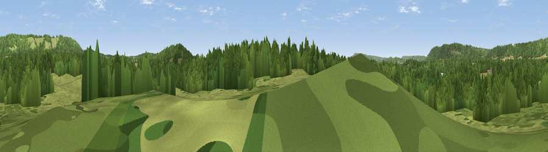

Viewpoint near Buckland
#39188 in England · top 59% of its area beats it · near BucklandThe view, rendered

A 360° render of this exact spot computed from the terrain model, tree cover and land cover — summer colours, afternoon light, calibrated against photographs of famous viewpoints. Real trees, hedges and buildings will differ in detail.
The panorama
Grey silhouette: terrain skyline in each direction (720 bearings, Earth curvature and refraction included). Dashed green: skyline with trees (+15 m) and buildings (+8 m) as obstacles. Blue strip: how far the ground is visible on each bearing.
Where the view opens
Wedge length = distance to the farthest visible ground on that bearing (vegetation-aware). Rings at 10, 25 and 50 km.
What fills the view
52% woodland · 36% grassland · 10% cropland · 1% built-up · 1% water
Angular shares of the visible panorama (visual magnitude), not map area. Landscape diversity 0.45 (0–1 Shannon).
Key numbers
More beautiful places nearby
The staircase of upgrades: each row has a higher view potential than everything closer. Driving times are estimates from straight-line distance, calibrated against real road routing — check an actual route before setting out.
| Place | Direction | Drive | Score |
|---|---|---|---|
| Viewpoint near Buckland | SSE · 0 km | ~2 min | 40.9 |
| Viewpoint near Reigate | ESE · 1 km | ~4 min | 53.6 |
| Viewpoint near Lower Kingswood | N · 2 km | ~6 min | 67.8 |
| Box Hill | WNW · 3 km | ~8 min | 70.4 |
| Viewpoint near Box Hill Village | WNW · 4 km | ~8 min | 71.0 |
| Viewpoint near Coldharbour | SW · 11 km | ~21 min | 71.3 |
| Wolstonbury Hill | S · 36 km | ~55 min | 79.6 |
| Viewpoint near Westmeston | SSE · 38 km | ~57 min | 81.1 |
51.23576, -0.23382 · source: osm viewpoint · position refined by local search. Computed location — check access rights before visiting.